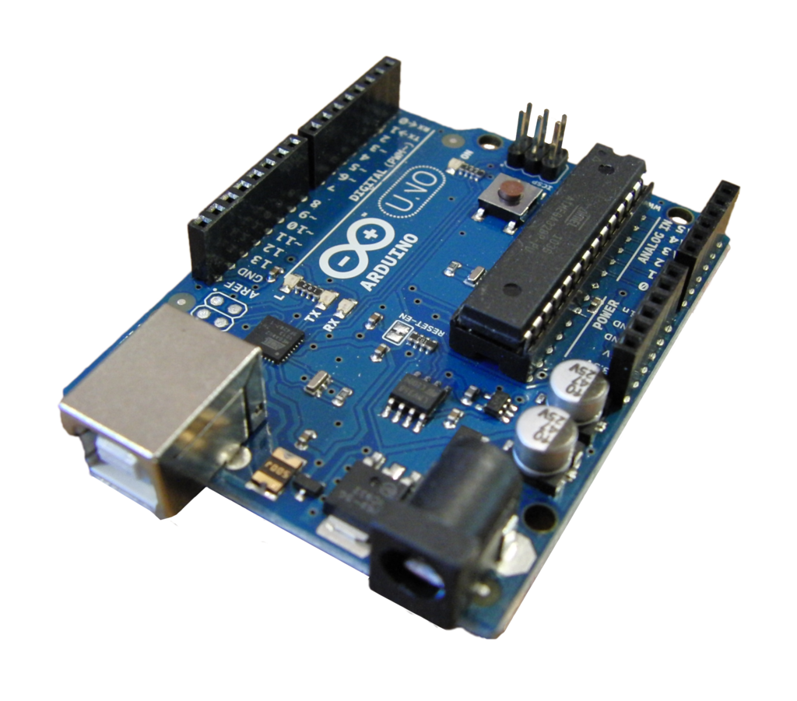
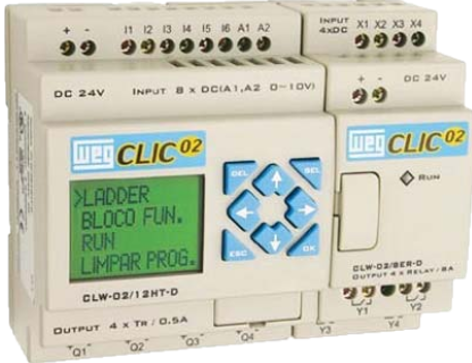
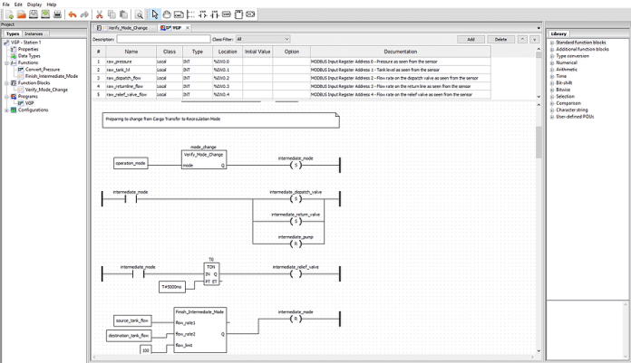

Apresentação
Objetivo:
Este artigo tem o objetivo de apresentar ao leitor a possibilidade de implementar Controladores Lógicos Programáveis (PLC´s) baseados em arduinos. Sabe-se que quando o assunto é automação, principalmente na área industrial, o PLC assume lugar de destaque tendo em vista a facilidade de adaptação a qualquer projeto de automação, bem como a utilização de linguagem baseada em lógica de relés, conhecida como linguagem Ladder.
O cenário se torna diferente quando o foco é a area da educação, tendo em vista que o processo de ensino aprendizagem voltado para automação de sistemas exige investimentos em infraestrutura de laboratórios que muitas vezes não é viável para determinadas instituições de ensino. Sendo assim, vou mostrar várias opções que vocês podem encontrar na internet para aprimorar seus conhecimentos sobre o assunto.
O que é o Arduino?
Arduino é uma plataforma de prototipagem eletrônica de hardware livre e de placa única, projetada com um microcontrolador Atmel AVR com suporte de entrada/saída embutido, uma linguagem de programação padrão, a qual tem origem em Wiring, e é essencialmente C/C++.
O objetivo do projeto é criar ferramentas que são acessíveis, com baixo custo, flexíveis e fáceis de se usar por principiantes e profissionais. Principalmente para aqueles que não teriam alcance aos controladores mais sofisticados e ferramentas mais complicadas. Pode ser usado para o desenvolvimento de objetos interativos independentes, ou ainda para ser conectado a um computador hospedeiro. Uma típica placa Arduino é composta por um controlador, algumas linhas de E/S digital e analógica, além de uma interface serial ou USB, para interligar-se ao hospedeiro, que é usado para programá-la e interagi-la em tempo real. A placa em si não possui qualquer recurso de rede, porém é comum combinar um ou mais Arduinos deste modo, usando extensões apropriadas chamadas de shields.
A interface do hospedeiro é simples, podendo ser escrita em várias linguagens. A mais popular é a Processing, mas outras que podem comunicar-se com a conexão serial são: Max/MSP, Pure Data SuperCollider, ActionScript e Java. Em 2010 foi realizado um documentário sobre a plataforma chamado Arduino: The Documentary.
O nome Arduino vem de um bar em Ivrea, Itália, onde alguns dos fundadores do projeto costumavam se reunir. O bar foi nomeado após Arduíno de Ivrea, que foi o marquês da Marca de Ivrea e Rei da Itália de 1002 a 1014.
Fonte: https://pt.wikipedia.org/wiki/Arduino. Acesso em: 30 jun 2021.
O que é PLC ou CLP?
Controlador Lógico Programável (sigla CLP, do inglês: Programmable Logic Controller - PLC) é um equipamento eletrônico especializado que desempenha funções de controle e monitoramento de máquinas e processos industriais de diversos tipos e níveis de complexidade, através de programas específicos desenvolvidos pelo usuário (cada controlador possui o próprio software).
Conforme a Associação Brasileira de Normas Técnicas (ABNT) o Controlador Lógico Programável é um equipamento eletrônico digital com hardware e software compatíveis com aplicações industriais. Segundo a National Electrical Manufacturers Association (NEMA), é um aparelho eletrônico digital que utiliza uma memória programável para armazenar internamente instruções e para implementar funções específicas, tais como lógica, sequenciamento, temporização, contagem e aritmética, controlando, por meio de módulos de entradas e saídas, vários tipos de máquinas ou processos.
O controlador possui um sistema operacional de tempo real, para controle de processos de alto risco, comum em indústrias, e um hardware que deve suportar condições extremas de trocas temperatura, umidade, pressão, entre outras situações as quais um computador padrão não suportaria.
Um CLP é o controlador indicado para lidar com sistemas de automação caracterizados por eventos discretos (SEDs), ou seja, com processos em que as variáveis assumem valores zero ou um (ou variáveis ditas digitais, ou seja, que só assumem valores dentro de um conjunto finito). Podem ainda lidar com variáveis analógicas definidas por intervalos de valores de corrente ou tensão elétrica. As entradas e/ou saídas digitais são os elementos discretos, as entradas e/ou saídas analógicas são os elementos variáveis, baseados em valores conhecidos de tensão ou corrente.
Fonte: https://pt.wikipedia.org/wiki/Controlador_l%C3%B3gico_program%C3%A1vel. Acesso em: 30 jun 2021.
Linguagem LADDER

A linguagem Ladder foi originalmente desenvolvida para construir circuitos de relés, utilizados em processos industriais. Desta forma, era possível acionar máquinas industriais no chão de fábrica, como cilindros hidráulicos e motores elétricos. Todos os dispositivos de circuitos elétricos, como botões, válvulas e solenoides podem ser representados em símbolos nos Diagramas Ladder, incluindo suas conexões. Na atualidade, os quadros de relés foram substituídos por Controladores Programáveis (CLP).
A linguagem Ladder, diagrama Ladder ou diagrama de Escada é um auxílio gráfico para programação de Controladores Lógicos Programáveis (CLPs), no qual as funções lógicas são representadas através de contatos e bobinas, de modo análogo a um esquema elétrico com os contatos dos transdutores e atuadores. A linguagem ladder está entre as cinco linguagens de programação de CLPs definidas pela IEC 61131-3 : FBD (Function Block Diagram, Diagrama de Blocos), LD (Ladder diagram, Diagrama Ladder), ST (Structured text, Texto Estruturado), IL (Instruction list, Lista de Instruções) e SFC (Sequential function chart, Diagrama de Funções Sequenciais).
O nome (ladder, escada em inglês) provém do fato que a disposição dos contatos e bobinas é realizada, de maneira geral, na vertical, que lembra o formato de uma escada. A cada lógica de controle se dá o nome de rung (degrau), composta por linhas e colunas.
A verificação do código pode variar entre os fabricantes de CLPs, mas é comum que a atualização seja feita da esquerda para a direita e de cima para baixo.
Fonte: https://pt.wikipedia.org/wiki/Linguagem_ladder. Acesso em: 30 jun 2021.
PLC Arduino
O primeiro CLP de Código Aberto Padronizado
O OpenPLC, projeto criado por Thiago Rodrigues Alves (estudante de doutorado na Universidade do Alabama), surgiu através do objetivo de encontrar vulnerabilidade em PLCs (Programmable Logic Controller ou Controlador Lógico Programável – CLP). Entretanto, dificilmente algum fabricante de CLP disponibilizaria seu código fonte para que o estudante pudesse realizar uma análise mais profunda, a fim de validar seus estudos. Devido a isto, ele resolveu criar o seu próprio CLP de hardware e software livres, que pode ser programado nas 5 principais linguagens definidas conforme a norma IEC 61131-3, que estabelece a arquitetura básica de software e as linguagens de programação para CLPs. Dentre as linguagens suportadas pelo OpenPLC, estão: LD (Ladder Diagram ou Diagrama Ladder), FBD (Function Block Diagram ou Diagramas de Blocos Funcionais), ST (Structured Text ou Texto Estruturado), IL ](Instruction List ou Lista de Instruções) e SFC (Sequential Function Chart ou Sequenciamento Gráfico de Funções).
O projeto do OpenPLC possui um ambiente de desenvolvimento de programas, é compatível com praticamente qualquer software SCADA existente, utiliza o protocolo Modbus/TCP para comunicação e inclui um editor de Interface Homem Máquina (IHM) de código aberto, denominado SCADA BR. Outro ponto interessante a se destacar condiz a compatibilidade do OpenPLC com o PLCopen Editor, sendo esse um software que permite escrever programas para CLP de acordo com a IEC 61131-3, estando em conformidade com o PLCopen XML. A figura 1 ilustra a linguagem Ladder sendo aplicada sobre o PLCopen Editor.
Vídeo Tutorial
Programando arduino em Ladder - Parte 01
O vídeo a seguir é de autoria do Bruno Raniere - Projetos Eletrônicos. No canal dele no Youtube você encontra uma série de vídeos sobre o assunto./p>